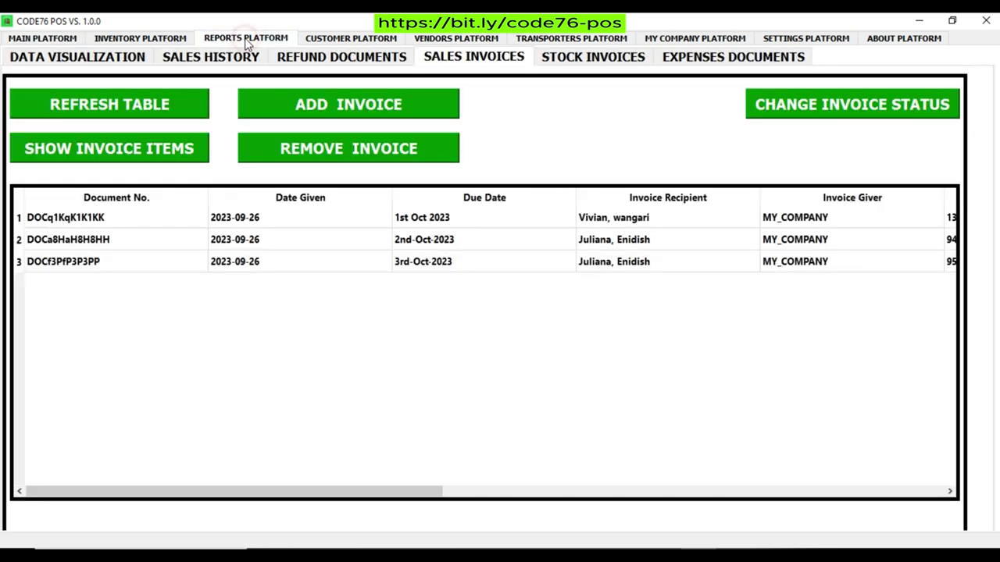
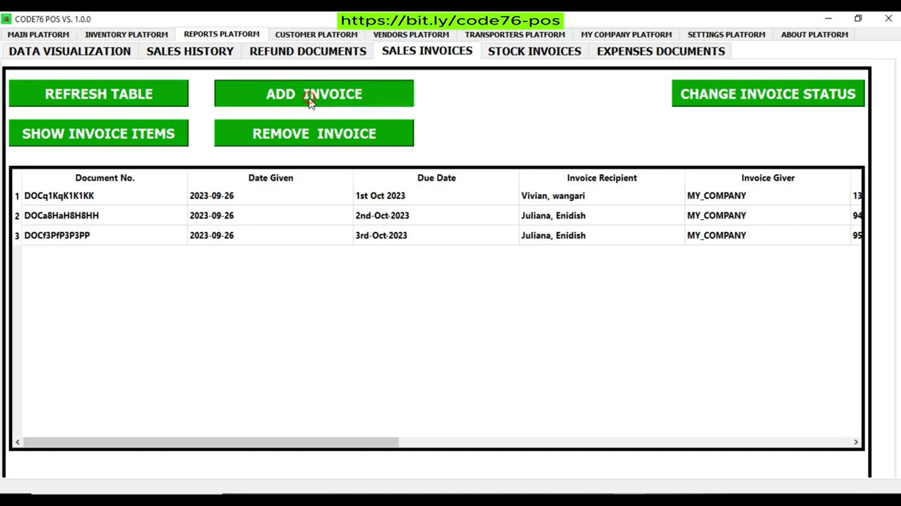
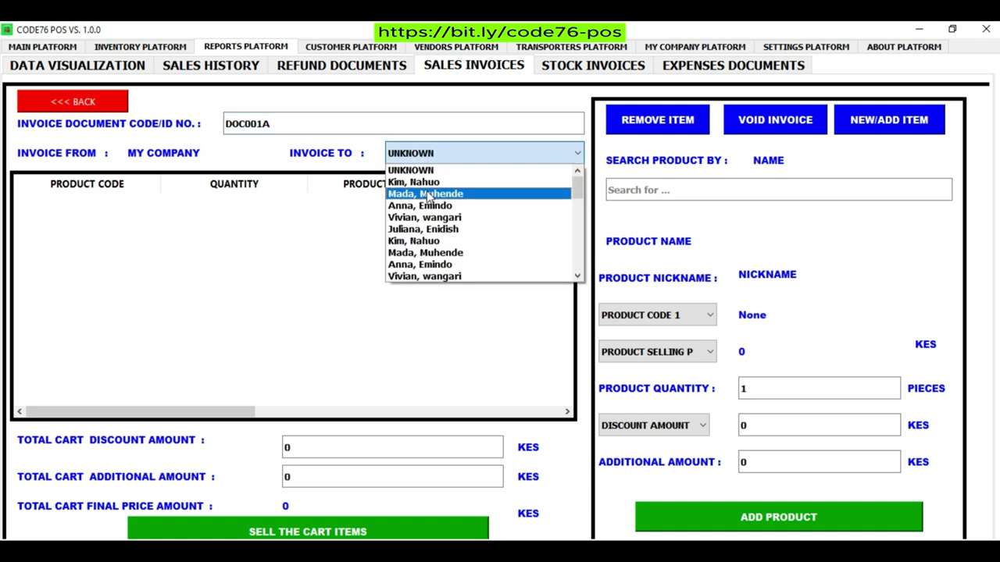
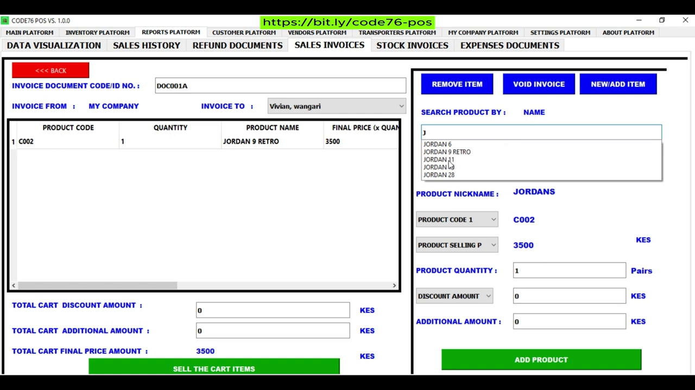
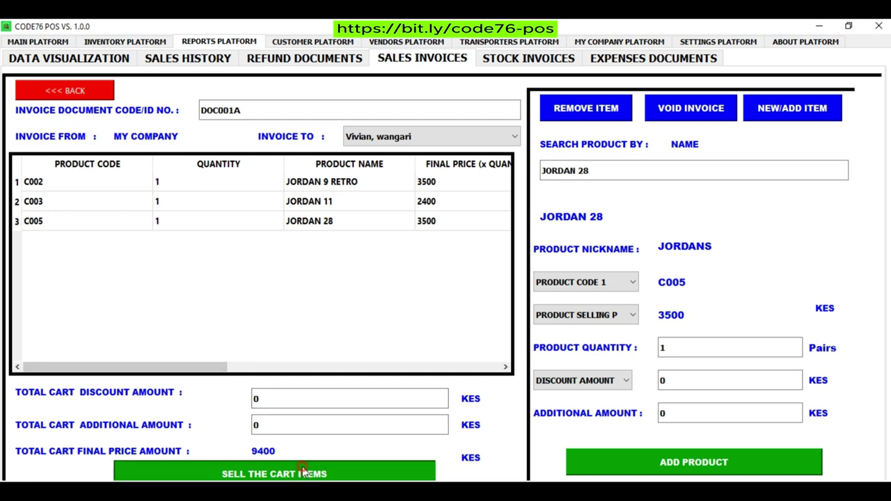
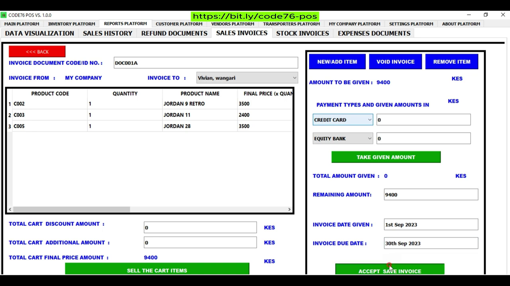
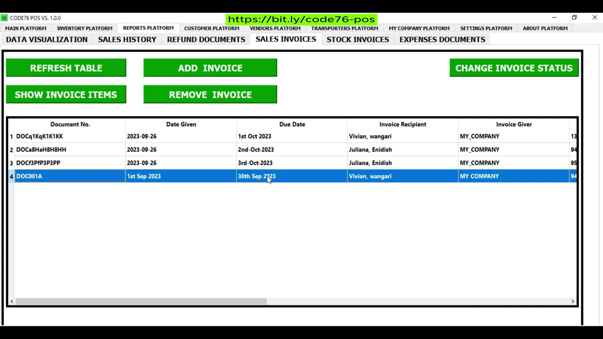

How hard is it to do sales invoicing with CODE76 POS ?
As an Interested Entrepreneur or Business Owner,
The Short Answer is :
SIMPLE !!! FAST!!! PROFICIENT !!!
Don’t Believe me ? I HAVE PROOF !!!
We just need to follow this Simple, Easy & Quick Steps. Follow along:
* STEP 1: NAVIGATE TO THE REPORTS PLATFORM, THEN TO SALES INVOICE SECTION IN CODE76 POS.
* STEP 2: FEEDING IN YOUR SALES INVOICE INFO INTO CODE76 POS.
* STEP 3: CONFIRM YOUR SALES INVOICE INFORMATION.
* STEP 4: JUST REPEAT THE PROCESS TO ADD OR CREATE MORE SALES INVOICE INFORMATION.
Now, Let Us Begin ...
STEP 1: NAVIGATE TO THE REPORTS PLATFORM, THEN TO SALES INVOICE SECTION IN CODE76 POS.
Move your Cursor to and Select the REPORTS PLATFORM tab header. Then navigate towards and click on the SALES INVOICE tab header. Now you will see is the Sales Invoice Display page. On The Sales Invoice Display Page, there are features such as: Display Table and Green Buttons –With inscriptions explaining what they do. In this case, We are Just interested in that green “ADD INVOICE” Button. As You want to view the Sales Invoice Entry Page. Therefore, Go ahead and Click on that Button. Which will direct you to the Sales Invoice Entry Page in the CODE76 POS.
 
STEP 2: FEEDING IN YOUR SALES INVOICE INFO INTO CODE76 POS.
Now that the Sales Invoice Entry Page is Displayed, we start typing our invoice information. First, remember to input your Document Number on the Top-Left of the screen. Follow the entry box placeholders and labels as your guide. Notice at first, the process is similar to the selling process, but as you conclude it seems slightly different. Confirm your Information, Because you want to avoid making any Errors. If everything is Good, Go ahead and Click on the green “ACCEPT SAVE INVOICE” Button. Which will conclude your invoicing, by creating and saving your sales invoice. Then now directed back to the Sales Invoice Display Page in CODE76 POS.
   
STEP 3: CONFIRM YOUR SALES INVOICE INFORMATION.
Now redirected back to the Sales Invoice Display Page, get to check if your current entered information appears in the Sales Invoice Display Table in CODE76 POS .
If it hasn’t appeared yet, please click on the “REFRESH TABLE” Green Button on the top right.
As a result, your sales invoice data will be secured, refreshed and will appear on the display table.
You want to Confirm if you did input your Sales Invoice information correctly in CODE76 POS.
Note: The Products’ Quantities you Invoiced will be deducted in the Inventory Database.
If the information was not added correctly, then you can Delete the Current information and start the entry process a fresh again.
How to Delete any sales invoice information, I share in another video.

STEP 4: JUST REPEAT THE PROCESS TO ADD OR CREATE MORE SALES INVOICE INFORMATION.
Just repeat step 1, 2 & 3 to continue adding or creating more of your sales invoice information.
Note: The this Invoice Process will Affect the Inventory Database,
therefore make sure that your product quantity are sufficient in the inventory before invoicing them.
Again, if you made a mistake on the information and its already in the Sales Invoice Database, Don’t Panic
– Just delete the information and start the process again.
If you have any questions or comments about the entire process or just CODE76 POS,
please use the contact information or website link below to get the customer support info.
Also in the “ABOUT PLATFORM” of the Application you will find customer support info .
You can also use the contact information below or website link below if you want to Buy CODE76 POS.
TAKE ACTION NOW & TRY IT YOURSELF !!!
Now Tell Us Which Step Was Hard or the Easiest For You ?
What Do You Think? Any Thoughts ?
Did you like this article and you want more of this ?
Please, Comment in the Contact Page/Form or Email Us.
Remember to Subscribe To Our Youtube Channel and Newsletter.
Also Check our Social Media and Be Active.
Thank You For Reading, & Continue Enjoying Reading Our Other Articles.